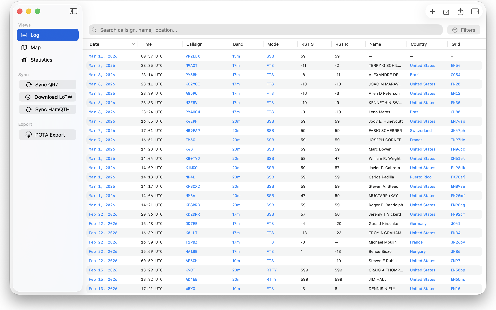
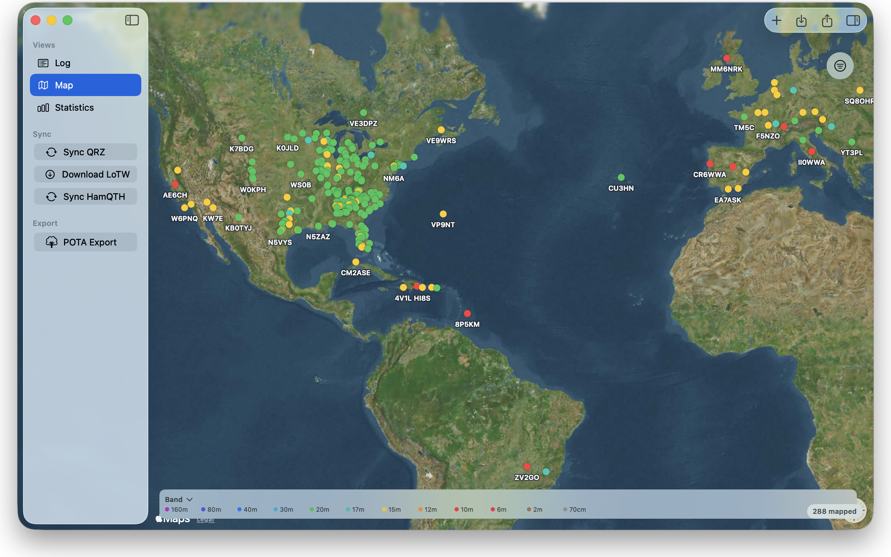
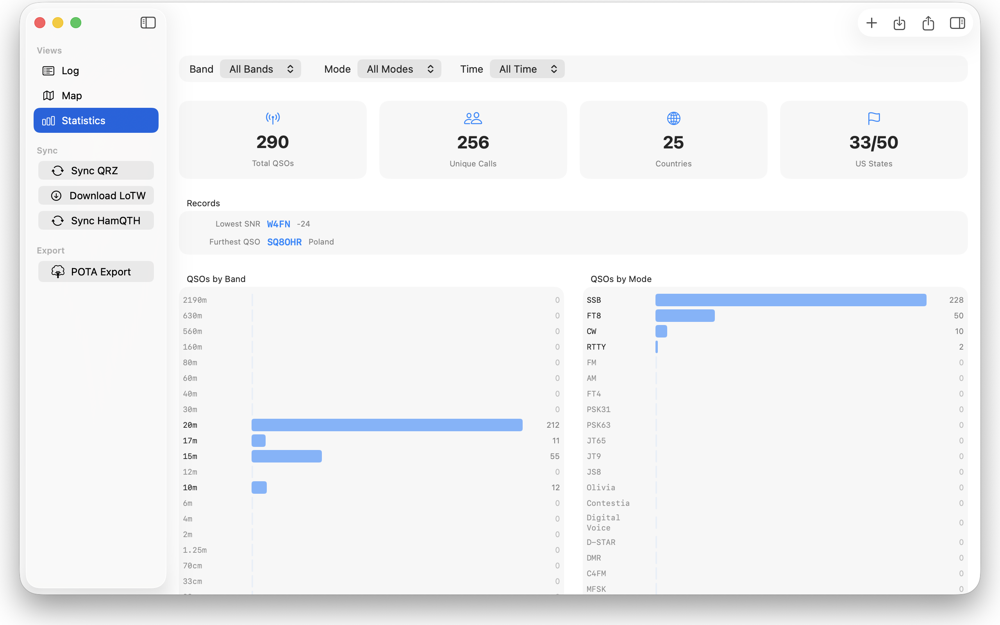
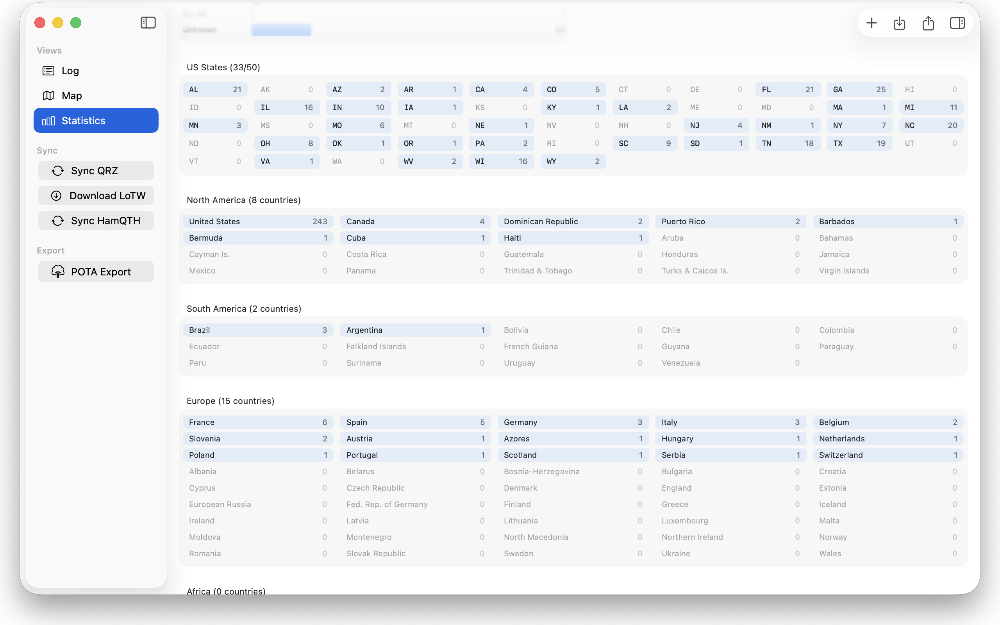

Véalo en acción
Mac





Una aplicación rápida y nativa para registrar contactos de radioaficionado en Mac, iPad y iPhone. Importa y exporta ADIF, sincroniza con QRZ, HamQTH y LoTW, y visualiza todos tus contactos en un mapa.




Soporte completo de ADIF 3.1.4. Importa tus registros existentes desde cualquier software de radioaficionado. Exporta para compartir o respaldar tus datos.
Busca contactos por indicativo, rango de fechas, banda, modo, país, estado, locator o búsqueda de texto libre.
Tu libro de guardia se sincroniza automáticamente entre Mac, iPad y iPhone a través de iCloud. Registra un contacto en un dispositivo, consúltalo en todos.
Consulta datos de indicativos en QRZ.com y HamQTH.com. Sincroniza tu libro de guardia con QRZ y descarga confirmaciones QSL de LoTW.
Visualiza todos tus contactos en un mapa interactivo. Los marcadores están codificados por colores según la banda. Ve tu huella DX de un vistazo.
Sigue tu progreso con recuentos de QSO por banda, modo y país. Consulta indicativos únicos, entidades DXCC y más.
Desarrollado con SwiftUI para la mejor experiencia en cada plataforma.